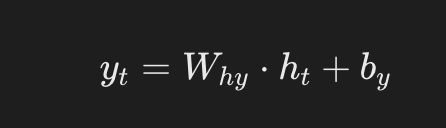

PyTorch 循环神经网络（RNN）
循环神经网络（Recurrent Neural Networks, RNN）是一类神经网络架构，专门用于处理序列数据，能够捕捉时间序列或有序数据的动态信息，能够处理序列数据，如文本、时间序列或音频。
RNN 在自然语言处理（NLP）、语音识别、时间序列预测等任务中有着广泛的应用。
RNN 的关键特性是其能够保持隐状态（hidden state），使得网络能够记住先前时间步的信息，这对于处理序列数据至关重要。
RNN 的基本结构
在传统的前馈神经网络（Feedforward Neural Network）中，数据是从输入层流向输出层的，而在 RNN 中，数据不仅沿着网络层级流动，还会在每个时间步骤上传播到当前的隐层状态，从而将之前的信息传递到下一个时间步骤。
隐状态（Hidden State）： RNN 通过隐状态来记住序列中的信息。
隐状态是通过上一时间步的隐状态和当前输入共同计算得到的。
循环单元的结构如下：
- 输入（\(x_t\)）：在时间步 \(t\) 的输入向量。
- 隐藏状态（\(h_t\)：在时间步 \(t\) 的隐藏状态向量，用于存储之前时间步的信息。
- 输出（\(y_t\)）：在时间步 \(t\) 的输出向量（可选，取决于具体任务）。
公式：

\[ h_t = f(W_{hh}h_{t-1} + W_{xh}x_t + b_h) \]
- ht：当前时刻的隐状态。
- ht-1：前一时刻的隐状态。
- Xt：当前时刻的输入。
- Whh、Wxh：权重矩阵。
- b：偏置项。
- f：激活函数（如 Tanh 或 ReLU）。
输出（Output）： RNN 的输出不仅依赖当前的输入，还依赖于隐状态的历史信息。
公式：

\[ y_t = W_{hy}h_t + b_y \]
- yt：在时间步 t 的输出向量（可选，取决于具体任务）。
- Why：是隐藏状态到输出的权重矩阵。。
RNN 如何处理序列数据
循环神经网络（RNN）在处理序列数据时的展开（unfold）视图如下：

RNN 是一种处理序列数据的神经网络，它通过循环连接来处理序列中的每个元素，并在每个时间步传递信息，以下是图中各部分的说明：
-
输入序列（Xt, Xt-1, Xt+1, ...）：图中的粉色圆圈代表输入序列中的各个元素，如Xt表示当前时间步的输入，Xt-1表示前一个时间步的输入，以此类推。
隐藏状态（ht, ht-1, ht+1, ...）：绿色矩形代表RNN的隐藏状态，它在每个时间步存储有关序列的信息。ht是当前时间步的隐藏状态，ht-1是前一个时间步的隐藏状态。
权重矩阵（U, W, V）：
U：输入到隐藏状态的权重矩阵，用于将输入Xt转换为隐藏状态的一部分。W：隐藏状态到隐藏状态的权重矩阵，用于将前一时间步的隐藏状态ht-1转换为当前时间步隐藏状态的一部分。V：隐藏状态到输出的权重矩阵，用于将隐藏状态ht转换为输出Yt。
输出序列（Yt, Yt-1, Yt+1, ...）：蓝色圆圈代表RNN在每个时间步的输出，如Yt是当前时间步的输出。
循环连接：RNN的特点是隐藏状态的循环连接，这允许网络在处理当前时间步的输入时考虑到之前时间步的信息。
-
展开（Unfold）：图中展示了RNN在序列上的展开过程，这有助于理解RNN如何在时间上处理序列数据。在实际的RNN实现中，这些步骤是并行处理的，但在概念上，我们可以将其展开来理解信息是如何流动的。
信息流动：信息从输入序列通过权重矩阵U传递到隐藏状态，然后通过权重矩阵W在时间步之间传递，最后通过权重矩阵V从隐藏状态传递到输出序列。
PyTorch 中的 RNN 基础
在 PyTorch 中，RNN 可以用于构建复杂的序列模型。
PyTorch 提供了几种 RNN 模块，包括：
torch.nn.RNN：基本的RNN单元。torch.nn.LSTM：长短期记忆单元，能够学习长期依赖关系。torch.nn.GRU：门控循环单元，是LSTM的简化版本，但通常更容易训练。
使用 RNN 类时，您需要指定输入的维度、隐藏层的维度以及其他一些超参数。
PyTorch 实现一个简单的 RNN 实例
以下是一个简单的 PyTorch 实现例子，使用 RNN 模型来处理序列数据并进行分类。
1、导入必要库
实例
import torch.nn as nn
import torch.optim as optim
from torch.utils.data import DataLoader, TensorDataset
import numpy as np
2、定义 RNN 模型
实例
def __init__(self, input_size, hidden_size, output_size):
super(SimpleRNN, self).__init__()
# 定义 RNN 层
self.rnn = nn.RNN(input_size, hidden_size, batch_first=True)
# 定义全连接层
self.fc = nn.Linear(hidden_size, output_size)
def forward(self, x):
# x: (batch_size, seq_len, input_size)
out, _ = self.rnn(x) # out: (batch_size, seq_len, hidden_size)
# 取序列最后一个时间步的输出作为模型的输出
out = out[:, -1, :] # (batch_size, hidden_size)
out = self.fc(out) # 全连接层
return out
3、创建训练数据
为了训练 RNN，我们生成一些随机的序列数据。这里的目标是将每个序列的最后一个值作为分类的目标。
实例
num_samples = 1000
seq_len = 10
input_size = 5
output_size = 2 # 假设二分类问题
# 随机生成输入数据 (batch_size, seq_len, input_size)
X = torch.randn(num_samples, seq_len, input_size)
# 随机生成目标标签 (batch_size, output_size)
Y = torch.randint(0, output_size, (num_samples,))
# 创建数据加载器
dataset = TensorDataset(X, Y)
train_loader = DataLoader(dataset, batch_size=32, shuffle=True)
4、定义损失函数与优化器
实例
model = SimpleRNN(input_size=input_size, hidden_size=64, output_size=output_size)
# 定义损失函数和优化器
criterion = nn.CrossEntropyLoss() # 多分类交叉熵损失
optimizer = optim.Adam(model.parameters(), lr=0.001)
5、训练模型
实例
for epoch in range(num_epochs):
model.train() # 设置模型为训练模式
total_loss = 0
correct = 0
total = 0
for inputs, labels in train_loader:
# 前向传播
outputs = model(inputs)
loss = criterion(outputs, labels)
# 反向传播和优化
optimizer.zero_grad()
loss.backward()
optimizer.step()
total_loss += loss.item()
# 计算准确率
_, predicted = torch.max(outputs, 1)
total += labels.size(0)
correct += (predicted == labels).sum().item()
accuracy = 100 * correct / total
print(f"Epoch [{epoch+1}/{num_epochs}], Loss: {total_loss / len(train_loader):.4f}, Accuracy: {accuracy:.2f}%")
6、测试模型
训练结束后，我们可以在测试集上评估模型的表现。
实例
model.eval() # 设置模型为评估模式
with torch.no_grad():
total = 0
correct = 0
for inputs, labels in train_loader:
outputs = model(inputs)
_, predicted = torch.max(outputs, 1)
total += labels.size(0)
correct += (predicted == labels).sum().item()
accuracy = 100 * correct / total
print(f"Test Accuracy: {accuracy:.2f}%")
7、完整代码如下：
实例
import torch.nn as nn
import torch.optim as optim
import matplotlib.pyplot as plt
import numpy as np
# 数据集：字符序列预测（Hello -> Elloh）
char_set = list("hello")
char_to_idx = {c: i for i, c in enumerate(char_set)}
idx_to_char = {i: c for i, c in enumerate(char_set)}
# 数据准备
input_str = "hello"
target_str = "elloh"
input_data = [char_to_idx[c] for c in input_str]
target_data = [char_to_idx[c] for c in target_str]
# 转换为独热编码
input_one_hot = np.eye(len(char_set))[input_data]
# 转换为 PyTorch Tensor
inputs = torch.tensor(input_one_hot, dtype=torch.float32)
targets = torch.tensor(target_data, dtype=torch.long)
# 模型超参数
input_size = len(char_set)
hidden_size = 8
output_size = len(char_set)
num_epochs = 200
learning_rate = 0.1
# 定义 RNN 模型
class RNNModel(nn.Module):
def __init__(self, input_size, hidden_size, output_size):
super(RNNModel, self).__init__()
self.rnn = nn.RNN(input_size, hidden_size, batch_first=True)
self.fc = nn.Linear(hidden_size, output_size)
def forward(self, x, hidden):
out, hidden = self.rnn(x, hidden)
out = self.fc(out) # 应用全连接层
return out, hidden
model = RNNModel(input_size, hidden_size, output_size)
# 定义损失函数和优化器
criterion = nn.CrossEntropyLoss()
optimizer = optim.Adam(model.parameters(), lr=learning_rate)
# 训练 RNN
losses = []
hidden = None # 初始隐藏状态为 None
for epoch in range(num_epochs):
optimizer.zero_grad()
# 前向传播
outputs, hidden = model(inputs.unsqueeze(0), hidden)
hidden = hidden.detach() # 防止梯度爆炸
# 计算损失
loss = criterion(outputs.view(-1, output_size), targets)
loss.backward()
optimizer.step()
losses.append(loss.item())
if (epoch + 1) % 20 == 0:
print(f"Epoch [{epoch + 1}/{num_epochs}], Loss: {loss.item():.4f}")
# 测试 RNN
with torch.no_grad():
test_hidden = None
test_output, _ = model(inputs.unsqueeze(0), test_hidden)
predicted = torch.argmax(test_output, dim=2).squeeze().numpy()
print("Input sequence: ", ''.join([idx_to_char[i] for i in input_data]))
print("Predicted sequence: ", ''.join([idx_to_char[i] for i in predicted]))
代码解析：
数据准备：
- 使用字符序列
hello，并将其转化为独热编码。 - 目标序列为
elloh，即向右旋转一个字符。
- 使用字符序列
模型构建：
- 使用
torch.nn.RNN创建循环神经网络。 - 加入全连接层
torch.nn.Linear用于映射隐藏状态到输出。
- 使用
训练部分：
- 每一轮都计算损失并反向传播。
- 隐藏状态通过
hidden.detach()防止梯度爆炸。
测试部分：
- 模型输出字符的预测结果。
可视化：
- 用 Matplotlib 绘制训练损失的变化趋势。
假设你的模型训练良好，输出可能如下：
Epoch [20/200], Loss: 0.0013 Epoch [40/200], Loss: 0.0003 Epoch [60/200], Loss: 0.0002 Epoch [80/200], Loss: 0.0001 Epoch [100/200], Loss: 0.0001 Epoch [120/200], Loss: 0.0001 Epoch [140/200], Loss: 0.0001 Epoch [160/200], Loss: 0.0001 Epoch [180/200], Loss: 0.0001 Epoch [200/200], Loss: 0.0001 Input sequence: hello
从结果来看，图像显示损失逐渐减少，表明模型训练有效。
8、可视化代码：实例
import torch.nn as nn
import torch.optim as optim
import matplotlib.pyplot as plt
import numpy as np
# 数据集：字符序列预测（Hello -> Elloh）
char_set = list("hello")
char_to_idx = {c: i for i, c in enumerate(char_set)}
idx_to_char = {i: c for i, c in enumerate(char_set)}
# 数据准备
input_str = "hello"
target_str = "elloh"
input_data = [char_to_idx[c] for c in input_str]
target_data = [char_to_idx[c] for c in target_str]
# 转换为独热编码
input_one_hot = np.eye(len(char_set))[input_data]
# 转换为 PyTorch Tensor
inputs = torch.tensor(input_one_hot, dtype=torch.float32)
targets = torch.tensor(target_data, dtype=torch.long)
# 模型超参数
input_size = len(char_set)
hidden_size = 8
output_size = len(char_set)
num_epochs = 200
learning_rate = 0.1
# 定义 RNN 模型
class RNNModel(nn.Module):
def __init__(self, input_size, hidden_size, output_size):
super(RNNModel, self).__init__()
self.rnn = nn.RNN(input_size, hidden_size, batch_first=True)
self.fc = nn.Linear(hidden_size, output_size)
def forward(self, x, hidden):
out, hidden = self.rnn(x, hidden)
out = self.fc(out) # 应用全连接层
return out, hidden
model = RNNModel(input_size, hidden_size, output_size)
# 定义损失函数和优化器
criterion = nn.CrossEntropyLoss()
optimizer = optim.Adam(model.parameters(), lr=learning_rate)
# 训练 RNN
losses = []
hidden = None # 初始隐藏状态为 None
for epoch in range(num_epochs):
optimizer.zero_grad()
# 前向传播
outputs, hidden = model(inputs.unsqueeze(0), hidden)
hidden = hidden.detach() # 防止梯度爆炸
# 计算损失
loss = criterion(outputs.view(-1, output_size), targets)
loss.backward()
optimizer.step()
losses.append(loss.item())
if (epoch + 1) % 20 == 0:
print(f"Epoch [{epoch + 1}/{num_epochs}], Loss: {loss.item():.4f}")
# 测试 RNN
with torch.no_grad():
test_hidden = None
test_output, _ = model(inputs.unsqueeze(0), test_hidden)
predicted = torch.argmax(test_output, dim=2).squeeze().numpy()
print("Input sequence: ", ''.join([idx_to_char[i] for i in input_data]))
print("Predicted sequence: ", ''.join([idx_to_char[i] for i in predicted]))
# 可视化损失
plt.plot(losses, label="Training Loss")
plt.xlabel("Epoch")
plt.ylabel("Loss")
plt.title("RNN Training Loss Over Epochs")
plt.legend()
plt.show()
执行后，显示图片如下所示：


点我分享笔记